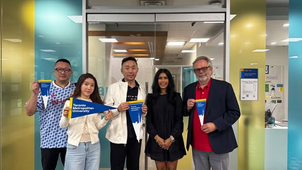

《看懂制度，選對世界》第一集
只看世界排名，可能會低估多倫多都會大學 TMU
大學介紹： 談到加拿大多倫多的大學，很多家長第一時間想到的是 University of Toronto。但如果學生在意的是另一件事： 「我念完大學之後，能不能更快進入加拿大職場？

【如果你只看世界排名，可能會低估這所大學：TMU正在成為多倫多最值得注意的「實戰型大學」】 大學介紹： 談到加拿大多倫多的大學，很多家長第一時間想到的是 University of Toronto。但如果學生在意的是另一件事： 「我念完大學之後，能不能更快進入加拿大職場？」 那麼位在多倫多市中心的 RyersonUniversity），其實是一所很值得重新認識的大學。它的特色一直不是把自己做成一座與城市隔離的象牙塔，而是把企業、產業、實習、創業與城市本身直接放進大學教育裡。而最近幾年，TMU還正在快速轉型。
從商學院、工程、傳播、設計，到法律、AI、創業，再到2025年正式開幕的醫學院，TMU的發展路線其實相當值得觀察。TMU最大的優勢之一：你不是「住在多倫多附近」，你就在多倫多市中心 TMU主校區地址是 350 Victoria Street，就在 Downtown Toronto，鄰近 Yonge Street、Dundas Square、Toronto Eaton Centre。換句話說，學生每天生活的地方，本身就是加拿大最大的商業與就業市場之一。
銀行、科技公司、媒體、零售、政府機構、新創企業、醫療機構、設計與娛樂產業，都集中在這個城市。這也是為什麼我一直認為，看加拿大大學不能只看一個排名數字。對一名18、19歲的大學生來說，「大學在哪裡」有時候會直接影響四年裡可以接觸到多少企業、實習、活動、人脈與工作機會。TMU就是典型的「 TMU其實不是一所突然冒出來的新大學 TMU的歷史可以追溯到 1948年。
二戰結束後，加拿大需要大量具有專業技能的人才，因此成立了 Ryerson Institute of Technology，最初只有約225名學生，課程非常強調職業與產業需求，包括建築、攝影、服裝設計等。這件事很重要。因為它也解釋了今天TMU為什麼特別強調： Career-focused education、Experiential Learning、Co-op、Innovation。1971年取得學位授予權，1993年正式取得大學地位，2002年成為 Ryerson University。
到了 2022年，正式更名為 Toronto Metropolitan University。今天TMU已經發展成擁有超過 100個大學與研究所課程、約48,000名學生，以及超過245,000名全球校友的大型綜合型大學。所以如果要理解TMU，與其把它看成一所「比較新的加拿大大學」，不如把它理解成： 一所從應用技術教育一路升級成大型都市綜合大學的學校。
TMU真正值得注意的，是它與「工作」之間的距離 加拿大大學很多都有 Co-op，但 TMU在2026年公布的資料顯示，96.6%的課程包含某種形式的 experiential learning，包括 Co-op、Internship、Clinical Placement 等。正式的 Co-op work term 通常是一個 16週、每週35–40小時的全職有薪工作；依不同科系，學生可能需要完成3至4個 work terms，也有部分課程可以安排較長的連續工作期。
而且TMU規定，作為正式 Co-op credit 的職位原則上必須是 Paid Work。校方列出的合作或曾聘用學生的企業，可以看到像： Bombardier Aerospace、Air Canada、Hydro One、IBM Canada、Scotiabank、Toronto Hydro、TTC、PCL、Apotex 等。當然要特別提醒： Co-op不是學校保證「派一份工作給你」。學生仍然需要準備履歷、面試、投遞職缺，與其他學生競爭。這反而更接近加拿大真正的求職環境。那麼TMU畢業生的就業表現如何？
這裡有一組非常值得家長注意的官方數字。TMU在 2026年4月更新的 Ontario Ministry Key Performance Indicators 中公布： 2022屆學士及第一專業學位畢業生 畢業6個月後就業率：85.1% 畢業2年後就業率：90.5% 為什麼用 OSSD 申請 TMU 特別有優勢？這一點對台灣學生非常重要。因為TMU本身就是安大略省的大學，而 OSSD 本身就是 Ontario Secondary School Diploma。
也就是說，學生所讀的高中課程與大學使用的招生制度是直接對接的。TMU目前對 Ontario Secondary School Students 的基本要求，就是： OSSD ＋ 6門 Grade 12 U/M 課程＋指定先修科目。六門12年級U/M課程的基本總平均要求為70%，但熱門科系實際錄取門檻通常會因競爭而提高。另外所有科系都需要 Grade 12 U English；不同專業還會有數學、Calculus、Science等指定先修課。這就是OSSD最大的申請優勢之一： 大學要什麼，高中階段就可以提前規劃什麼。
想申請商科，就安排需要的數學與12U/M課程。想申請工程，就把 Advanced Functions、Calculus、Physics、Chemistry等必要科目排進高中學習計畫。想申請傳播、設計、Creative School，除了成績之外，再提前準備需要的作品或非學術資料。而且TMU官方也明確表示，Grade 11成績可能用於 Early Admission 審查，之後再以Grade 12最終成績完成條件。這也是為什麼OSSD的升學規劃不能等到高三才開始。
另外，OSSD也不代表一定免IELTS或其他英文能力證明。TMU目前規定，如果學生在高中階段完成符合條件的 4年全日制加拿大教育、英語系國家教育，或以英文為主要授課語言的學校教育，才可能符合英文測驗豁免條件；校方仍保留要求英文能力證明的權利。TMU接下來的發展，才是我認為最值得關注的地方 2025年，TMU正式完成一件非常大的事情： School of Medicine 正式在 Brampton 開幕。這是 大多倫多地區超過100年來第一所新成立的醫學院。
第一屆共有 94名MD學生，申請人數超過 6,400人；同時還啟動研究生醫師培訓，而且TMU也是加拿大第一所同時啟動 undergraduate 與 postgraduate medical education 的新醫學院。這個發展對TMU的意義很大。因為過去大家想到TMU，可能先想到： 商業、傳媒、設計、工程、科技與創業。現在學校版圖已經延伸到： 法律＋醫療＋健康科學＋AI＋城市研究＋永續發展＋創新創業。
而TMU公布的 2025–2030 Academic Plan與Strategic Research Plan，也把「Future Readiness」、研究創新、產業合作、健康與社會問題等列入未來發展核心。更值得觀察的是，TMU近年的國際排名也持續上升。2026年校方指出，TMU已成為加拿大近兩年在QS世界大學排名中上升幅度最大的學校之一，並進入QS評比大學的全球前10%；雇主聲譽、研究引用與永續表現都是推動排名的重要因素。城市、產業、大學、Co-op與高中升學制度，被放在同一條路徑上。
這可能才是TMU最值得研究的地方。